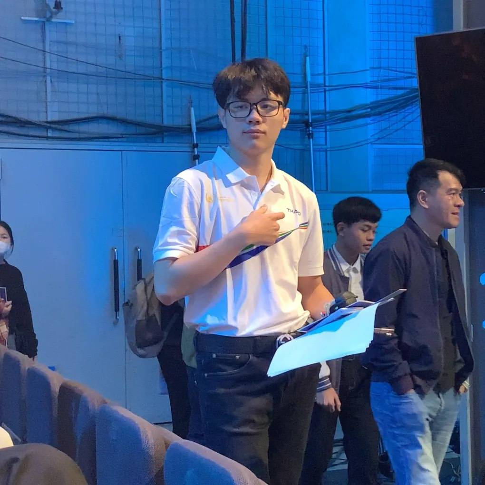
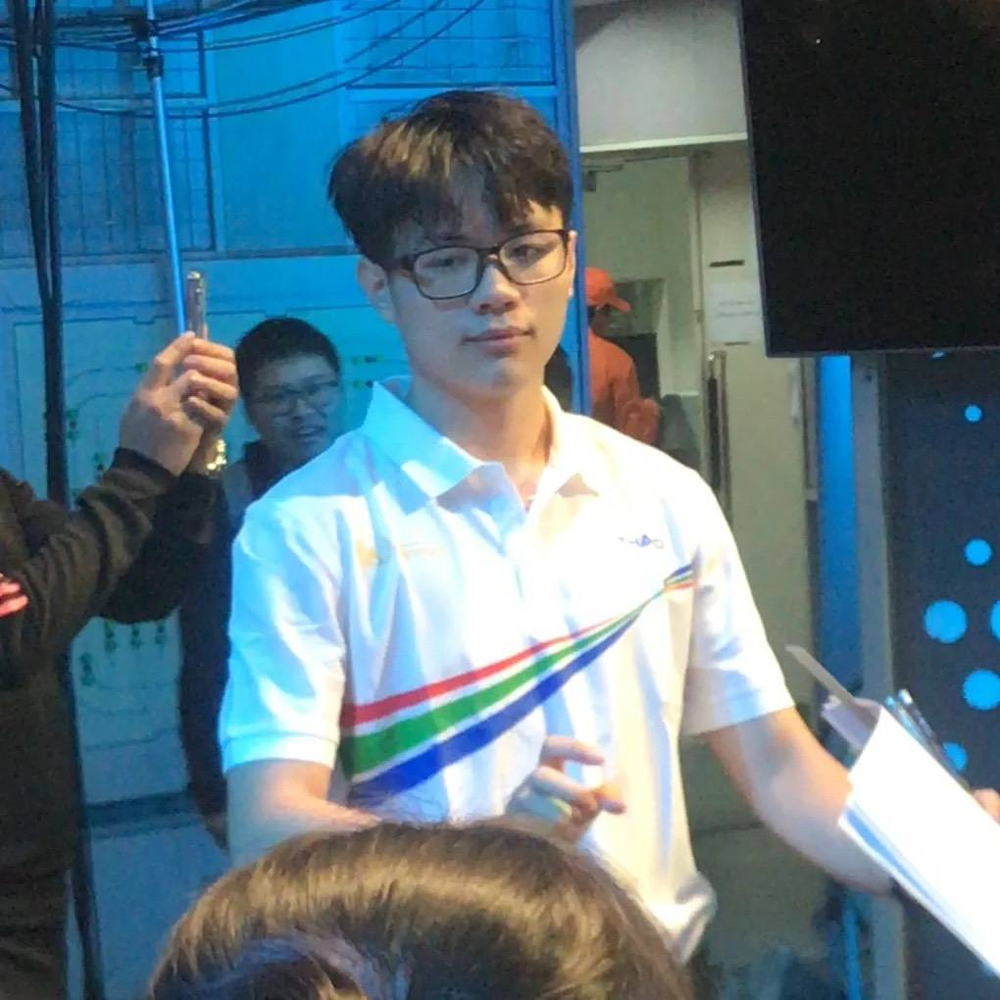

Portfolio cá nhân: Nguyễn Hoàng Minh Khôi
Sinh viên Trường Đại học Công nghệ - Đại học Quốc gia Hà Nội.
Đây là portfolio tổng hợp các bài tập của tôi trong học phần Nhập môn công nghệ số và ứng dụng trí tuệ nhân tạo. Tôi trình bày lại từng sản phẩm theo hướng dễ đọc, có minh họa và có phần tự nhận xét sau mỗi bài.
Nguyễn Hoàng Minh Khôi - MSSV 25022907


Thông tin sinh viên
Nguyễn Hoàng Minh Khôi
Mã sinh viên: 25022907
Ngành học: Trí tuệ nhân tạo
Trường: Đại học Công nghệ - Đại học Quốc gia Hà Nội
Điểm mạnh
- Ham học hỏi, có mục tiêu nâng cao năng lực công nghệ trong học tập.
- Quan tâm đến trí tuệ nhân tạo, đặc biệt là cách AI hỗ trợ phân tích dữ liệu và nghiên cứu.
- Có khả năng tổ chức tài liệu, trình bày báo cáo và chuyển hóa kết quả học tập thành sản phẩm số.

Sở thích
- Tìm hiểu công nghệ mới, mô hình AI và các công cụ hỗ trợ học tập.
- Đọc tài liệu khoa học ứng dụng AI trong y tế, giáo dục và kỹ thuật.
- Thử nghiệm các cách trình bày nội dung số như infographic, portfolio và báo cáo trực quan.
Mục tiêu học tập
- Nâng cao kỹ năng sử dụng công nghệ số và AI để phục vụ học tập, nghiên cứu và làm việc.
- Hình thành tư duy tổ chức dữ liệu, tìm kiếm thông tin học thuật và đánh giá nguồn đáng tin cậy.
- Sử dụng AI có trách nhiệm: minh bạch, kiểm chứng, bảo vệ dữ liệu và giữ vai trò chủ động của người học.
Các sản phẩm trong portfolio là sản phẩm học tập cá nhân, chỉ sử dụng cho mục đích tham khảo và đánh giá học phần.